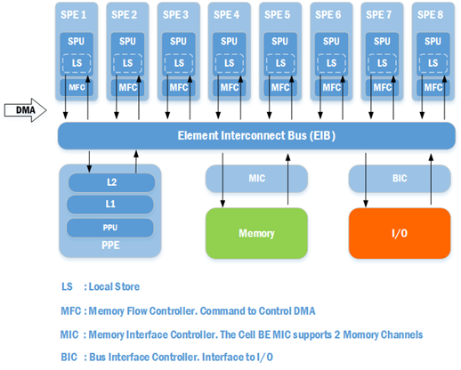
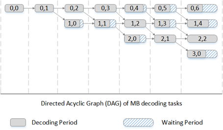
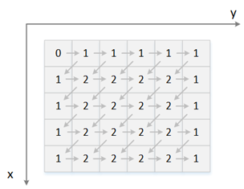
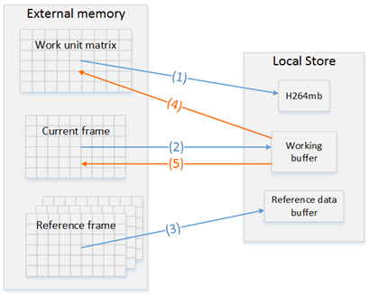
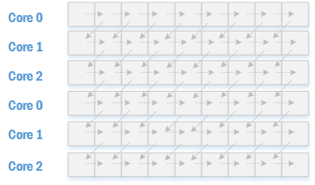
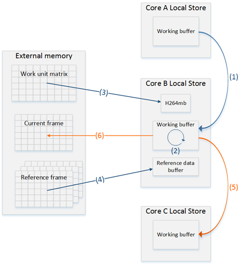
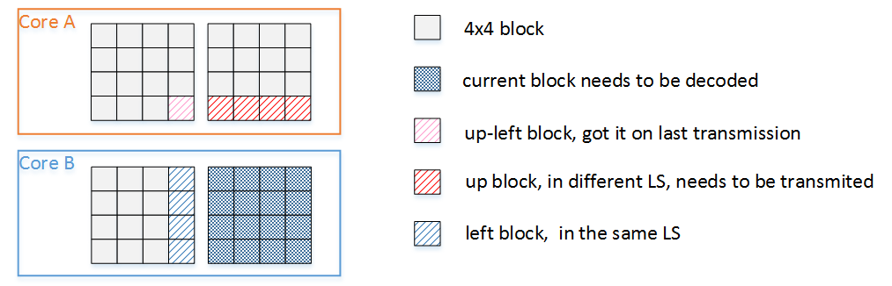
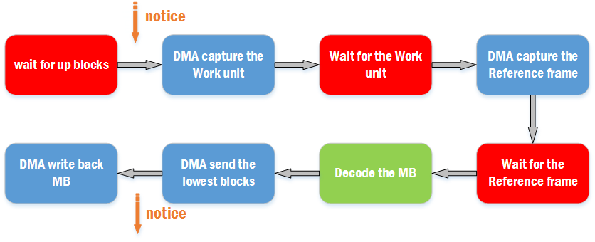
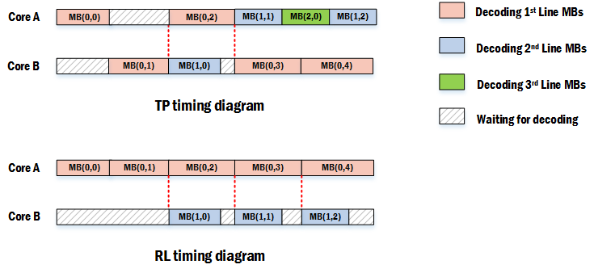
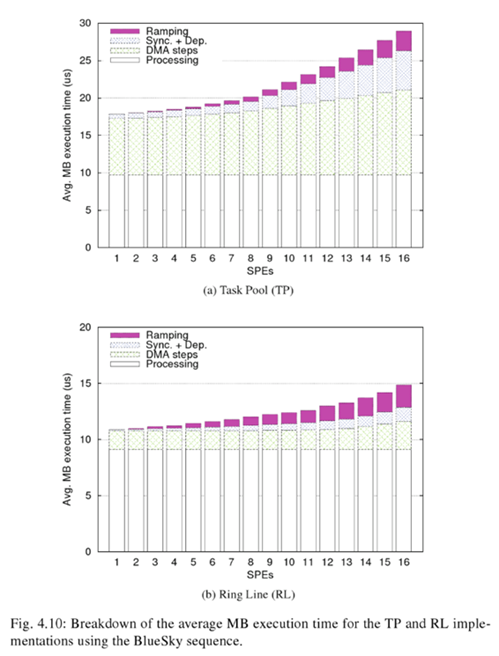

在《Scalable Parallel Programming Applied to H.264/AVC Decoding》书中，作者基于双芯片18核的Cell BE系统实现了2D-Wave并行解码算法。
Cell BE架构
首先来了解一下Cell BE。Cell BE全称为Cell Broadband Engine，是一种微处理器架构，Cell处理器由索尼、东芝、IBM共同研发，曾应用于PlayStation 3。Cell BE的架构如下图

一个Cell微处理器中共有9个核心，其中有1个PPE（PowerPC Element）以及8个SPE（Synergistic Processing Element）。PPE主要的目的是用于运行操作系统、执行各种控制工作；SPE的主要目的是用于运算，不过SPE只能直接处理LS中的数据。
Cell作为一个多核处理器，有着跟普通多核处理器不同的特征：核心内部的存储类型不是cache，而是本地存储（LS）。普通的多核处理器在多核并行运算的情况下，由于需要保持各个处理单元内cache的一致性，会由于同步cache带来额外的开销，核心越多，开销越大；而Cell处理器采用LS，把LS中内容存取的权利交给开发者，开发者需要什么样的数据，就可以从内存或者I/O通过DMA读取或写入。Cell处理器的这种架构，能消除cache同步所带来的开销，让开发者自行对LS中的数据进行同步，但是相应地会需要开发者自身对数据同步以及数据一致性有比较深入的理解。
SPE中的LS大小只有256KB，因此在很多情况下，LS中的数据只是一小部分数据，数据需要通过DMA源源不断地进行读写来保证SPE不会因为缺乏数据而被挂起。当然，SPE被挂起的情况肯定是不可避免的，但是程序要尽可能地做到运行流畅。
2D-Wave 实现
下面有两种2D-Wave的实现方式：
Task Pool。需要一个核心来维护宏块池（解码任务池），其他线程从宏块池中取出可被解码的宏块进行解码。
Ring-Line。每个核心负责解码一整行的宏块。
需要注意的一点是，上述所说的“解码”在流程中指的是熵解码后的部分，即宏块的重建。熵解码是无法进行数据级的并行（Data-level Parallelism）的，因为熵解码前的码流内很多都是变长的码字，变长的码字意味着只有解码完前面的码字才能开始后面码字的解码，因此熵解码只能按顺序进行。在Cell BE系统中，熵解码会由PPE核心独立完成。而上述的2D-Wave实现主要依赖于SPE的并行运算来完成。
在h.264并行解码算法分析中，我们分析了2D-Wave算法，得出该算法在理想情况下的并行度以及速度提升，但实际上各个宏块的解码时间是各不相同的，并且还有通信与同步的开销。因此，一个高效的算法实现必须使得这些开销最小化，以接近理想的效率。
我们所面临的主要问题可以归纳为两个：负载均衡（load balancing）。如下图，如果按照固定的解码任务调度的话，即以一个对角线为单位进行解码，这会导致一个单位的解码时间会依赖于对角线上解码时间最长的那个宏块，结果就是某些核心会由于等待而处于挂起状态。因此，我们需要按照一定的条件把解码宏块的任务分配给不同的核心，以尽量减少核心的等待时间。
通信与同步开销（communication/synchronization overhead）。由于运算在不同的SPE中进行，运算基于LS当中的数据，但是不同SPE中的LS是相互独立的，因此有必要在各个核心中进行通信与数据同步。我们可以把通信与同步当作同样的东西，因为在这里，通信时为了在解码任务间进行同步而做的。我们的目的就是把这个开销最小化。

Task Pool
TP结构
Task Pool Implementation 结构如上图所示
- M，主核心（PPE）。主核心需要维护一个宏块依赖表来跟踪宏块间的依赖，一旦宏块表中某个宏块的所有依赖都完成解码时，该宏块就可以出于准备状态（ready），因此会被作为一个解码任务被加入任务队列 。一旦出现空闲状态的从核心，则从任务队列中取出解码任务分配给从核心解码
- P，从核心（SPE）。目的就是解码宏块，每当解码完成一个宏块时，会进入等待状态，等待主核心分配新的解码任务
- Dependency table，宏块依赖表。表的大小为一帧中总体宏块的数目，表中的元素记录每个宏块所依赖宏块的数目。每当宏块所依赖的一个宏块解码完成时，表中的计数减1，当计数降到0时，表明宏块已经准备好被解码，会由主任务把其加入到解码任务队列
- Task queue，宏块解码任务队列。先进先出，当宏块已经准备好被解码时会加入到队列，当从任务解码完成一个宏块后，会从队列取出新的解码任务进行解码。

上图为一个宏块依赖表格，每个格子代表一个宏块，里面的数字就是该宏块的依赖数目。该表格记录的内容如下：
- 左上角是一帧的开始的宏块，并不依赖于当前帧的其他宏块
- 第一行的宏块只依赖于它左边的宏块
- 第一列的宏块依赖于它左上方、上方以及右上方的宏块，但是右上方的宏块肯定是晚于左上方以及上方的宏块进行解码，因此我们可以记录为只依赖于右上方的宏块，即当其右上方宏块解码完毕后就能开始解码
- 最后一列的宏块依赖于它左上方，上方，以及左边的宏块，但是左边的宏块肯定是晚于上方的宏块进行解码，因此我们可以记录为只依赖于左边的宏块，即当其左边宏块解码完毕后就能开始进行解码
- 其他的宏块所依赖的宏块有左上方、上方、右上方以及左边的宏块i，右上方与左边的宏块肯定是晚于左上方、上方的宏块进行解码，但是它们之间并没有直接的关系，因此这两者都是当前宏块的依赖
TP的主核心部分
主核心伪代码：
/注意，此处x代表纵轴，y代表横轴/
for (each frame)
{
/每帧开头需要初始化依赖表、把第一个宏块加入到待解码队列/
init_dependency_matrix();
decoded_mbs = 0;
enqueue(ready_q, (0, 0));
/*一开始所有核心都处于空闲状态，把它们都加入到核心队列*/
for (i = 0; i<NSPEs; i++)
enqueue(core_q, i);
while (decoded_mbs < HEIGHT*WIDTH)
{
/*
*1. 如果待解码队列不为空，表明有宏块需要解码；
*2. 如果核心队列不为空，代表有核心正在空闲；
*3. 此时就可以把需要解码的宏块分配给空闲的核心进行解码
*/
while (!(is_empty(ready_q) || is_empty(core_q)))
{
(x,y) = dequeue(ready_q);
i = dequeue(core_q);
send_MB_coordinates_to_spe(x,y,i);
}
/*
*1. 查看每个核心是否有消息返回
*2. 有消息返回代表解码已经结束
*3. 那么该核心会重新回归空闲状态，加入到核心队列等待下一次的任务分配
*4. 从返回来的消息中取得解码完成的宏块，并更新宏块依赖表
*5. 如果被更新的项依赖变成0，表明可以开始解码，因此加入到待解码队列
*/
for (i = 0; i<NSPEs; i++)
{
if (mailbox[i])
{
decoded_mbs++;
enqueue(core_q, i);
(x,y) = read_mailbox(i);
if (y<WIDTH-1)
if (--dep_count[x][y+1]==0)
enqueue(ready_q, (x, y+1));
if (x<HEIGHT-1 && y>0)
if(--dep_count[x+1][y-1]==0)
enqueue(ready_q, (x+1, y-1));
}
}
}
}
TP的从核心部分
从核心，即SPE，由于运算时只能直接从LS中存取，因此需要通过DMA把所需要的材料从外部内存中读取进来，待宏块解码完毕后再写回外部内存。流程如下图

其中有5处需要用到DMA传输
- 获取需要解码的宏块信息，即熵解码后的宏块信息
- 获取当前MB所需的周边MB的信息
- 如果是帧间宏块，需要获取参考图像中相应的宏块信息。想定位到参考图像中的相应，需要当前宏块的参考图像以及运动向量，也就是说必须要在步骤1执行完成之后才能开始这里的操作
- 如果采用了环路滤波，需要保存未被滤波的边界，用于后面宏块解码的帧内预测
- 写回解码后的宏块
SPE核心伪代码
while (!Finished)
{
/等待主核心启动该核心进行新的解码任务/
(x,y) = wait_for_next_MB();
/*通过DMA从外部内存获取需要解码的宏块信息*/
H264mb = fetch_MB_data(x, y);
/*通过DMA从外部内存获取当前宏块所需的周边宏块的相关信息*/
working_buf = fetch_intra_data(x, y);
/*如果是帧间宏块则需要通过DMA从外部内存获取其参考宏块的像素数据*/
ref_data_buf = fetch_referance_data(x, y);
/*解码（重建）宏块*/
decode_MB(x, y);
/*把解码后的宏块通过DMA写回外部内存*/
write_MB(x, y);
/*通知主核心解码结束*/
notify_master(x, y);
}
Ring-Line
RL结构
Ring-Line中的每个核心（SPE）负责解码一行宏块，如下图所示

上图假设一共有三个核心。在RL方案中，每个核心所负责的行是固定的，如上图中的Core 0负责第一行，Core 1负责第二行，Core 2负责第三行，然后又轮到Core 0负责第四行，如此循环。
这种实现的好处之一是省去同一行宏块间的同步所需的通信开销。如上图所示，由于同一行内的所有宏块统一由一个核心按照从左往右的顺序进行处理，因此水平方向的宏块依赖已经被隐式包含，图中用虚线箭头表示。实现箭头为行与行之间的宏块依赖，由于相邻行的宏块在不同的核心内进行解码，因此需要在核心之间通过通信来进行同步。
对于一个核心来说，责任就是解码自己负责的一行宏块。在解码每个宏块时，需要等待前一行相应宏块解码完毕的通知，在解码完一个宏块后通知下一行宏块所在的核心。
RL的数据传输
Ring-Line与Task Pool一样需要面对DMA传输的问题。由于是实现在Cell BE上，因此外部内存（memory）与本地存储（local store）之间的数据通信是无法避免的。传输流程如下图

在A核解码完一个宏块后，会通知B核去解码一个宏块。即把A核所拥有的、B核解码所需要的数据通过DMA从A核传输到B核，即当前宏块的上方宏块底下4个4x4 block，这些数据可用于Intra宏块重建、获取Inter宏块的mvp或者去块滤波
由于一行宏块统一在一个核内进行解码，因此宏块解码所需要的左方数据都在同一个核心的LS内，并不需要进行DMA传输
获取需要解码的宏块信息，即熵解码后的宏块信息
如果是帧间宏块，需要获取参考图像中相应的宏块信息。想定位到参考图像中的相应，需要当前宏块的参考图像以及运动向量，也就是说必须要在步骤3执行完成之后才能开始这里的操作
B核解码完成一个宏块后需要通知C核开始解码，即把C核所需的数据传输过去
写回解码后的宏块。在开启了去块滤波的情况下，当前宏块的右边界滤波需要依赖于当前宏块的右方宏块的，因此只能在右宏块解码完成后才能进行滤波并写回到外部内存
RL的数据传输优化
从上面的流程来看，每解码一个宏块需要执行DMA操作还是挺多的，然而DMA传输速度并不像内存读写那样迅速，DMA传输所带来的开销是不可忽视的，SPE核心会由于DMA操作而陷入比较久的等待，因此我们需要想办法来降低，或者说隐藏DMA传输的开销。
根据上面的描述，解码宏块有如下流程

其中需要等待三个DMA传输完成才能进行宏块解码。如果按照上述流程进行解码的话，在DMA传输期间，处理器的SPU（运算）部分是完全处于空闲状态的，我们可以从这里去入手来优化解码效率，也就是说我们可以修改流程，使得宏块解码和DMA传输并行，以此来隐藏需要等待DMA传输完成所带来的时间开销。在实现时，需要注意下面这几个方面：
当前宏块要开始进行解码，解码所需的材料必须先准备好，因此当前宏块的解码操作不可能跟获取当前宏块解码材料的DMA传输并行，只能跟获取之前的宏块的解码材料的DMA传输并行。Ring-Line方案由于是每个核心负责一行宏块，那么当前宏块的前一个宏块就是它的左方宏块了，Task-Pool无法采用这种技巧就是因为它的宏块解码顺序不是固定的。
在前面也讲过，在获得了宏块的熵解码信息后（Work unit）才能根据其中的信息去抓取参考参考帧（Reference frame）。
前面同样也讲过，在启用了去块滤波的情况下，只有在当前宏块解码完毕后，才能去滤波上一个宏块的右边界，最后才能写回。
按照上面的分析，可以得出如下的四级流水线
在每个SPE的处理流程上，需要做以下操作启动DMA去抓取MB(x+2)的Work unit，等待DMA抓取MB(x+1)的Work unit完成
启动DMA去抓取MB(x+1)的Reference data，等待DMA抓取MB(x)的Reference data完成
解码MB(x)
MB(x)解码完成后，进行MB(x)与MB(x-1)的边界滤波，然后写回MB(x-1)
通过这样流水线方式的优化，使得解码宏块的同时DMA也在进行数据传输，能很好地解决由于DMA传输带来的等待问题。

SPE伪代码：
实际上DMA传输是有大小以及对齐要求的，下面的代码在上面分析的基础上，为了满足DMA传输的要求，在传输block，即intra_data以及写回部分都是没一次DMA传输相邻的两个宏块
/注意，此处x代表纵轴，y代表横轴/
for (each frame)
{
for (x=spe_id; x<HEIGHT; x+=NSPEs)
{
for (y=2; y<WIDTH; y++)
{
/1. 启动DMA去抓取MB(x+2)的Work unit，等待DMA抓取MB(x+1)的Work unit完成/
dma_get(work_unit(x, y+2));
wait_on(work_unit(x, y+1));
/*2. 启动DMA去抓取MB(x+1)的Ref data，等待DMA抓取MB(x)的Ref data完成*/
dma_get(ref_data(x, y+1));
wait_on(ref_data(x, y));
/*等待上一个核心传输过来的数据(block)完成*/
if(y%2 == 0)
{
wait_for_prev_spe(intra_data((x, y), (x, y+1)));
}
/*3. 解码MB(x)*/
decode_MB(x, y);
if(y%2 == 0)
{
/*传输数据给下一个核心*/
send_to_next_spe(intra_data((x,y-2), (x,y-1)));
/*4. MB(x)解码完成后，进行MB(x)与MB(x-1)的边界滤波，然后写回MB(x-1)*/
dma_put(dedoced_data((x, y-2), (x, y-1)));
}
}
}
dma_barrier(); //wait until all dma transfers have completed
}
性能分析
理想情况下的TP与RL性能分析
这里的“理想情况”指的是不考虑通信与同步开销的情况（需要考虑不同宏块解码时间差异）。
- 在TP实现中，核心开始一个宏块的解码需要两个条件：核心处于等待执行下一次解码任务的空闲状态、有宏块已经准备好被解码。
- 在RL实现中，核心开始一个宏块的解码需要三个条件：核心处于等待执行下一次解码任务的空闲状态、有宏块已经准备好被解码、准备好的待解码宏块是属于空闲核心的。
由于RL比TP多出一个限制条件，因此TP在理论上来说会比RL更容易去执行一个解码任务，也就是说TP会比RL所用的解码时间短，性能要高。下面的例子能很好地反映出这个结论

（请结合DAG进行分析）以上是分别为TP以及RL解码的时序图，图中的例子采用双核来进行解码。可以看到TP方案中，解码完MB(1,1)后，虽然MB(1,2)由于其所依赖的MB(0,3)还未解码完成，所以不能开始被解码，但是MB(2,0)已经处于待解码状态，所以Core A可以开始解码MB(2,0)。而在RL方案中，由于每个核心只能负责固定行上的宏块，因此相比TP来说会浪费较多的时间来进行等待。
从时序图的整体来说，TP通过调度使得宏块在解码的时候更为顺畅，核心的负载更均衡。因此理论上说，在不考虑通信与同步的开销的情况下，TP会比RL性能更优。
实际情况下的TP与RL性能分析
这里的“实际情况”指的是本文章所描述的Cell BE架构。在实际的实现中，通信与同步所带来的开销是必须要计算进来的，Cell BE由于是多核非共享内存系统，在具体实现中需要大量用到DMA来进行数据传输，因此同步与通信所带来的开销更是不可忽视。
上面在讨论RL方案的时候，已经讲到了在Cell BE系统中面临的DMA传输开销问题，并且针对RL方案进行了优化，但是TP方案由于宏块解码顺序不固定，因此无法采用这种优化方式。书中给出了TP与RL在实际解码BlueSky时平均每个宏块的处理时长图

可以看到TP方案的宏块解码平均耗时比RL的高出许多，而且随着核心的增多，TP的耗时增长更快。在TP方案中，DMA传输与同步的开销占了相当大的比重，而RL方案由于经过了优化，因此所占的比重较小。
关于h.264并行解码算法的更详细分析请参考Ben Juurlink · Mauricio Alvarez-Mesa · Chi Ching Chi · Arnaldo Azevedo · Cor Meenderinck · Alex Ramirez:《Scalable Parallel Programming Applied to H.264/AVC Decoding》